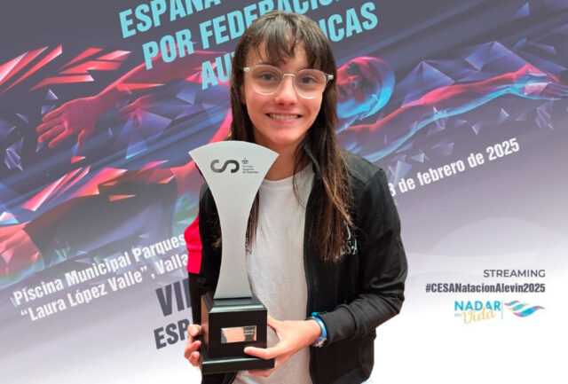

Elsa Remedios Montero
"Elsi"
Especialidad: Natación adaptada - espalda y braza
Edad: 14 años
Club: CD Aquatic Campanar
Biografía
Elsa es una joven nadadora paralímpica española nacida en 2011, miembro del equipo de natación adaptada de la Comunidad Valenciana (FESA) y alumna del colegio La Salle Paterna.
Logros Deportivos
- 🥈 Subcampeón de España Campeonato de España de Natación Inclusiva y Adaptada, celebrado en Valladolid
- 🥈 Elsa Remedios formó parte del equipo de natación adaptada de la Comunidad Valenciana, logrando el subcampeonato en la categoría por equipos
- Reconocida en su comunidad en el programa tiempo de descuento